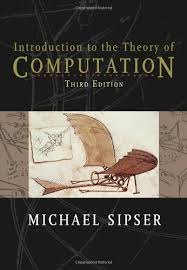

Final Exam Time: Wednesday, March 16, 2016, 12:30 PM - 14:20 PM
Required Textbook:
 [photo from Amazon.com]
Introduction to the Theory of Computation (third edition),
Michael Sipser, Publisher: Cengage Learning, 2012,
ISBN-10: 113318779X,
ISBN-13: 978-1133187790.
The third edition is preferred but older editions will work. The textbook will be available through the PSU Bookstore. Amazon carries this book for $205 (new hardback) and $55 (new paper) and $64 (e-book rental) and $42 (hardcover rental).
(Amazon Page)
Homework:
HW #1 due 1/20/2016
HW #2 due 2/1/2016
HW #3 due 2/10/2016
HW #4 due 2/22/2016
HW #5 due 3/2/2016
HW #6 due 3/16/2016 (before final exam)
Catalog Description:
Computability theory: study of models of computation (Turing, Church, Kleene), recursive function theory, properties of recursive, and recursively innumerable sets. Prerequisite: CS 311 (Computational Structures)
Topics to be covered (tentative):
-
Regular Languages
-
Finite State Machines
-
Regular Expressions
-
Nondeterministic Machines
-
Pumping Lemma for Regular Languages
-
Context-Free Languages and Grammars
-
Pushdown Automata
-
Pumping Lemma for Context-Free Languages
-
Turing Machines
-
The Church-Turing Thesis
-
Decidability and Turing Recognizability
-
The Halting Problem
-
Reducibility
-
The Recursion Theorem
-
Decidability of Logical Theories
-
Time Complexity
-
The Classes P and NP
-
NP-Completeness
Prerequisites:
The official course prerequisites are:
CS 250: Discrete Structures I (sets, functions, relations, countability, proofs)
CS 251: Discrete Structures II (Boolean logic, first-order logic, formal reasoning and deduction)
CS 311: Computational Structures (regular languages, context-free languages, Turing machines, computability)
Students should have previously encountered many of the topics we will cover. Chapter 0 of the Sipser textbook sets the stage by providing background, prerequisite information that you should already know. We will not cover this chapter, but please read it before the first class as a refresher and to make sure you are ready for this material.
It is the student's responsibility to ensure that he/she has the
appropriate background before attempting this class.
Grading:
Your grade will be based approximately, as follows.
These percentages are tentative and subject to change.
20% - Homeworks
20% - Midterm Exam #1
20% - Midterm Exam #2
40% - Final Exam
I want all students to focus on learning as much as they can from this class and not to stress out over grades.
That said, grades will be based on a point system. At the end of the term, your points will be added together and then all the students will be placed in rank order, from the top-scoring student to the lowest-scoring student. The final letter grades will be based on each student's place in the rank order.
At the beginning of this course, each student will be assigned a 4 digit "code number". This number is for this class only and has nothing to do with your PSU ID number. Midway through the term, I will post a "grades-so-far" chart, showing the rank ordering and allowing students to see how they are doing relative to the rest of the class. Using this number, you will be able to locate your individual scores while remaining anonymous to other students.
(NOTE: I will NOT use the usual scheme where 90-100 is an A, 80-89 is a B, etc. For example, you should not assume that an exam grade of "53 out of 107" is a poor grade; it would be a great grade if everyone else scored lower. Instead, I score on a "curve", which means that there will be a typical distribution of grades, with many people getting Bs but some getting As and some getting Cs or worse.)
The grading procedures and point system are described in more detail
here.
Policies:
Attendance in class is mandatory. Successful students will arrive on-time, relaxed and full of curiosity.
Attendance will be checked regularly and may count for part of your grade, especially if you miss more than a couple of classes.
In case you miss a class (e.g., for serious illness or emergency), you should watch the video on the material that was covered.
I encourage students to freely discuss the material in this class.
You may also use the class mailing list to post questions, comments, etc.
You should not post solutions to homework problems.
You must compose and write all homework and exam answers individually, with no assistance.
You may not copy, plagiarize, or otherwise cheat.
The exams may test on material covered only in class or on material
covered only in the reading assignments. You must both read the material and attend classes. Exams will be closed-book, closed notes, no calculators. The Final Exam will be comprehensive, which means it will cover material from all parts of the class.
Incompletes will not be given.
Snow Closure:
For inclement weather information, call the University switchboard, 725-3000,
for a recorded message about university-wide class cancellation.
Snow closure info is also available at:
www.pdx.edu (The PSU home page).
http://www.oregonlive.com/closures/ (Oregon Live).
http://katu.com/weather/closings (KATU TV).
Other Cancellations:
If I should need to cancel class for any reason, I will email the class mailing list.
MailMan Mailing List: PorterClassList
A "MailMan" e-mailing list will be maintained for this class.
From time to time I may post notices about the class and hints/comments
about assignments. Students are encouraged to send mail to the list, too.
All students should
subscribe to this list. Go to the following web page and
enter your email address and a password and click "subscribe".
https://mailhost.cecs.pdx.edu/mailman/listinfo/PorterClassList/
The MailMan program will email you a confirmation message. You must reply, but you can simply hit your email "reply" button. After being adding to the mailing
list you will get a "welcome" message from me.
To post a message to all the list members, send email to:
PorterClassList@mailhost.cecs.pdx.edu
For additional documentation, see
staff.imsa.edu/~ckolar/mailman/mailman-userguide-0.1.pdf (pdf, 159 kb)
(By the way, if Internet Explorer does not work with MailMan on the Mac, use the "Safari" web browser instead.)
Hints on how to study effectively:
Here is a document I wrote, which you may find useful or interesting:
Professor Porter's Study Tips
Problems / Comments on This Web Page